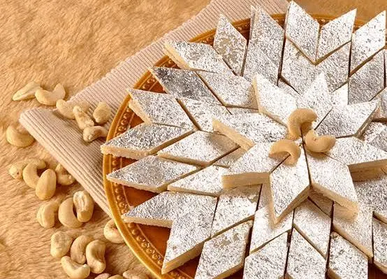

Kaju Katli - Loved By ALL hated By None
Home

DESCRIPTION
Kaju katli (Cashew slice) is an Indian dessert. Kaju means cashew; barfi is often made by thickening milk with sugar and other
ingredients (such as dry fruits and mild spices). Kesar kaju katli includes saffron. It is similar to barfi, but unlike barfi,
it typically contains no milk.
The dish is prepared with cashews soaked in water for a considerable period of time (usually overnight), which are then ground to
a paste. Sugar solution is boiled down until a single thread forms when two fingers are dipped into it and pulled apart, after which
it is added to the ground cashews. Ghee, saffron (kesar), and dried fruits may also be added. The paste is then spread and flattened
in a shallow, flat-bottomed dish and cut into bite-sized rhombus-shaped pieces. The pieces are usually decorated with edible silver foil.
the finished sweet is usually white or yellow in color depending on the ingredients used for the paste and the proportions of each used.
Kaju katli is traditionally eaten during the Hindu festival of Diwali.
INGREDIENTS
- 3 cups cashews
- 12 pods green cardamom
- 1 ½ cups white sugar
- 12 tablespoons water
- 2 teaspoons ghee (clarified butter), or as needed
Steps to make kaju katli
- Blend cashews in a grinder just until they're in powder form. Don't overblend or they will start releasing their oil; we want the powder to remain dry.
- Remove green cardamom from the pods. Crush them into a powder with a mortar and pestle.
- Combine sugar and water in a nonstick pan over medium-high heat. Cook until sugar has completely dissolved, then bring to a boil. Lower the heat to medium and add cashew powder; stir thoroughly, making sure there are no lumps. Continue to cook and stir until it becomes a little thick.
- Add crushed cardamom powder and ghee; keep mixing and cooking until mixture thickens and starts separating from the sides of the pan. If it doesn't release from the pan, add some more ghee and mix again; it should look moist and sticky and not at all dry. Check to see if it's done by taking a spoonful and cooling it a bit; when you mold it into a ball and the texture is like fudge, it's done.
- Transfer mixture to a greased or parchment-lined plate and let cool until only slightly warm. Grease your palms and knead on parchment paper on a flat surface to form a very smooth dough, 2 to 3 minutes. Roll evenly to a thickness of 1/4 inch.
- Let rolled dough cool completely. Cut kaju katli into desired shapes. Serve at room temperature or cold.